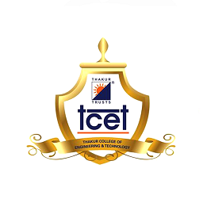

B.E. in Information Technology
Having the curosity for computers right from an early age, I chose to purse a Bachelor's degree in Information Technology from Thakur College of Engineering and Technology which is affiliated to the University of Mumbai.
In my undergraduate phase, I took courses which laid in me a strong technical foundation and made me proficient in IT and development. The courses also helped me understand how to store, manipulate and analyze data to reveal insights, thus introducing me to the field of Analytics and Business Intelligence. These courses include:
- Applied Mathematics
- Structured Programming Approach
- Object Oriented Programming Methodology
- Data Structures & Algorithm Analysis
- Computer Networks
- Database Management Systems
- Advanced Database Management Systems
- Operating System
- Web Programming
- Computer Organization and Architecture
- Open Source Technologies
- Software Engineering
- Data Mining and Business Intelligence
- Intelligent System
- Cloud Computing
- Big Data Analytics
- Enterprise Resource Planning
I graduated in May, 2019 with a CGPA of 8.06/10.